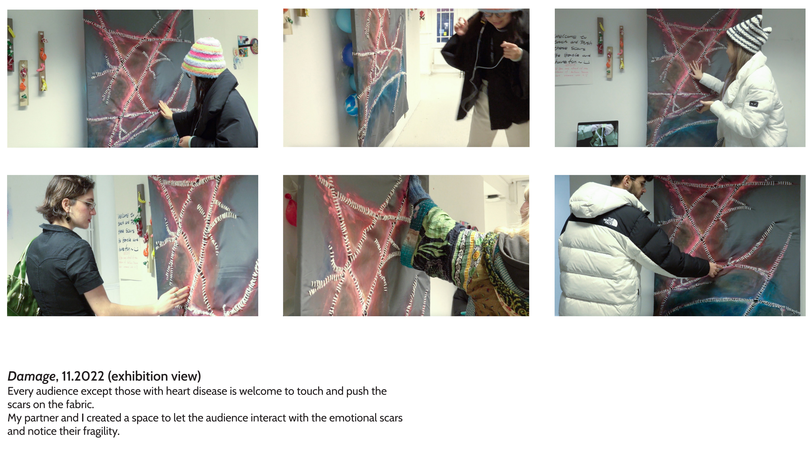
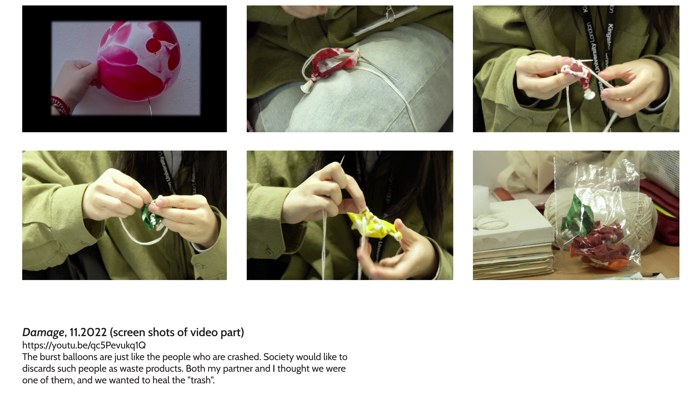

Damage
STATEMENT
Wounds take a long time to heal, and the ones that are not well cared for can become infected. So do emotional scars. The difference is emotional scars are more invisible.
伤口需要很长时间才能愈合，护理不当可能会被感染。情感伤痕也是如此，不同之处在于情感上的伤痕更加难被看见。
VISUAL_ASSETS: 03 // ARCHIVE_RECORDS
SCROLL_VERTICAL ↕


